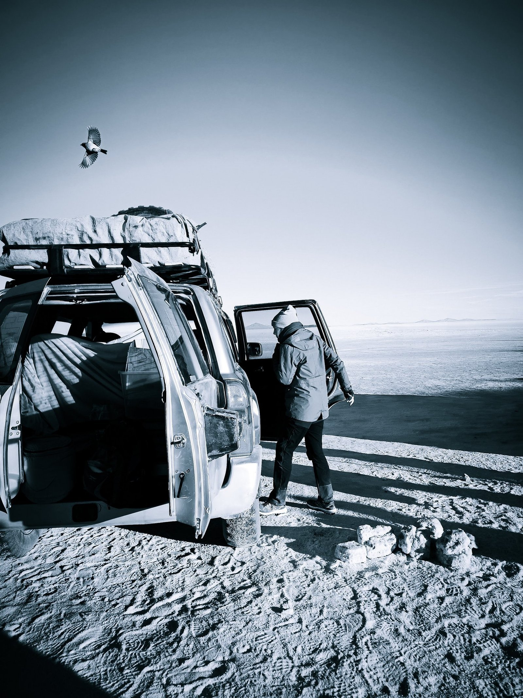
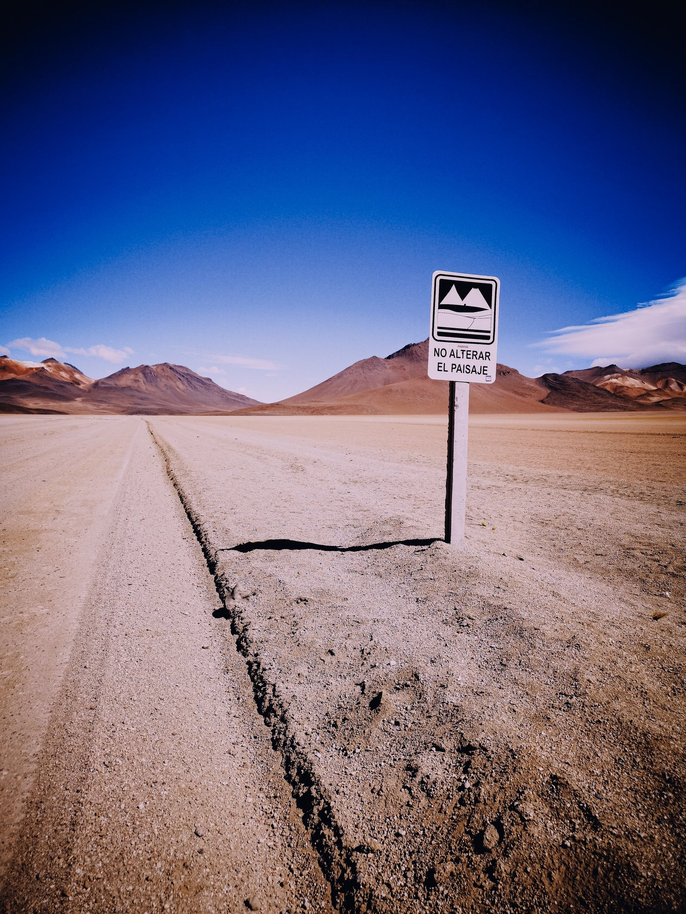
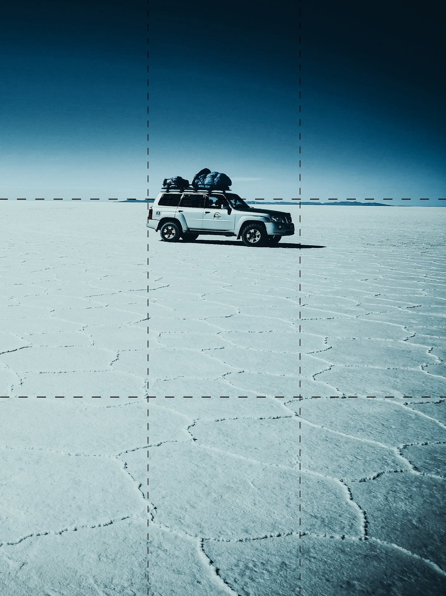
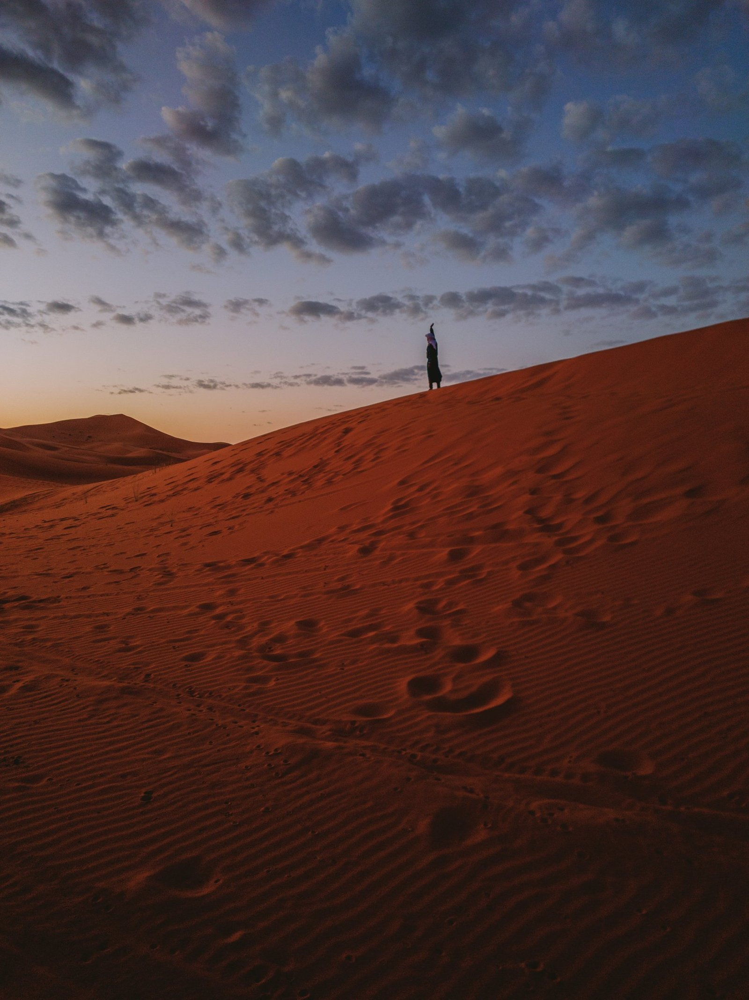
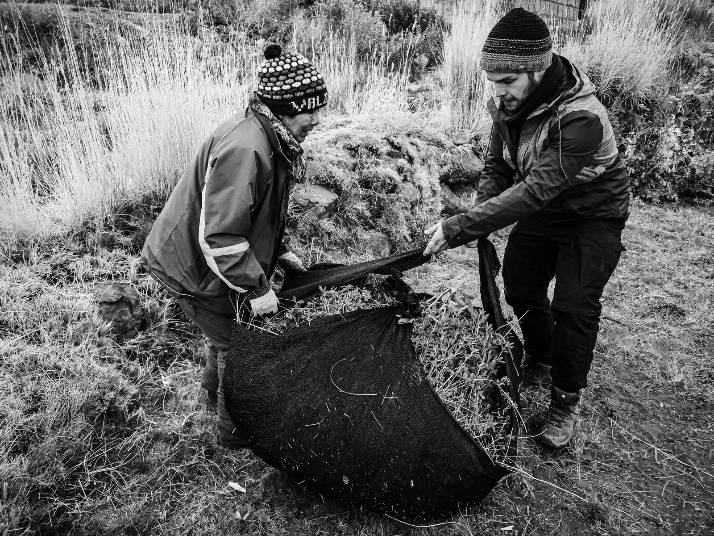

Have you ever taken a photo hoping to catch the magic of a moment... and ended up disappointed? Don't worry. Everyone has been there.
I remember my beginnings, juggling settings without really understanding what I was doing. Until the day I found a simple truth: photography is not just pressing a button. It is a dance between light, technique and creativity.
Today I am taking you into that adventure, to the basics that turn ordinary snapshots into extraordinary images. It starts with the exposure triangle.
1. The exposure triangle: the foundation of everything
Shutter speed: the time your sensor is exposed to light. A fast speed freezes action, ideal for a drop of water hanging in the air. A longer speed creates beautiful motion blur, like light trails in the city.
Aperture (f-stop): think of your lens opening as a door. The wider it is (a small f-number), the more light comes in. That creates the soft background blur called bokeh. A small opening (a high f-number) is perfect for sharp landscapes.
Here, the photo was underexposed
Here is the original photo...
And finally the overexposed one!
ISO: think of it as your camera's ability to see in the dark. The higher the ISO, the more sensitive it is to light... but watch the digital noise, which can damage the image.
Here is an example where the same photo received different exposures:
Light is the soul of photography, and the exposure triangle is the tool you use to control it. It is made of three main settings:
A practical tip: when you change one side of the triangle, the other two have to adapt to keep the exposure balanced.
Adapt the light to the mood you want to convey. My favorite here is the least exposed one (I added a touch of light on the pine cone to bring it forward, but you get the idea).
2. Working with light: your best ally
Natural light is an endless palette. In photography, people often distinguish:

Hard light: more direct, it can create striking contrast. It suits a bold style, or playing with shadows.
Soft light: ideal for portraits, it softens shadows and brings out detail. It is everywhere at sunrise and sunset, what we call the golden hour.
My advice: take time to look at the light around you before you shoot. A change of angle can transform everything.
3. Composition: giving your images strength
A good photographer does not only capture what they see. They tell a story. Here are three simple rules for structuring a picture:
The rule of thirds: imagine the frame divided into nine equal parts. Place your subjects on the lines or at the intersections for a balanced result. You can turn this grid on in a phone or a camera.



Here are three photos that show the basics of composition: leading lines, the rule of thirds, and minimalism.
Leading lines: use natural lines (roads, paths and so on) to guide the eye toward your subject.
Minimalism: sometimes less is more. Remove what is unnecessary and let your subject breathe in the frame.
4. Find your style: express your creativity
- Technique matters, but your vision is what makes the photos yours. Always ask yourself:
- What do I want to tell?
- What emotion does this photo evoke?
Experiment with unusual angles, reflections, even color. You find a style by stepping off the familiar path.

Conclusion: become fluent with your camera
Photography is a mix of science and art, a dance between technique and instinct. Once you master the basics — the exposure triangle, light, composition — you open the door to an endless range of creative possibilities.
Ready to lift your pictures? If this article inspired you, leave a message or share your work with me on Instagram. I am curious to see your world.
And remember: fluency comes with practice. Pick up your camera, go outside, and capture the world your way.